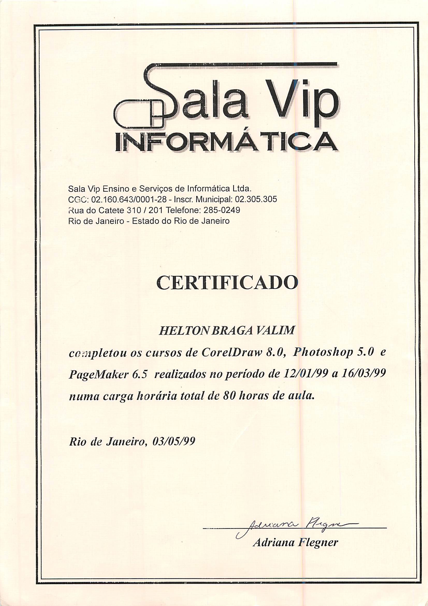

Cursos:
- Sala Vip Informática:
-
 Computação Gráfica (Corel, Photoshop e Pagemaker).
Computação Gráfica (Corel, Photoshop e Pagemaker).
- Centro Universitário da Cidade (UniverCidade):
- Microsoft Windows 2000 – Network and Operating System Essentials (2151A);
- Implementing Microsoft Windows 2000 Professional and Server(2152A).
- NSI Training Tecnologia:
- MS2274 – Gerenciando um Ambiente Microsoft Windows Server 2003;
- MS2275– Mantendo um Ambiente Microsoft Windows Server 2003.
- Allen Informática:
- MS 4994 – Introdução a programação .NET com Visual Studio 2005.

- Render Multimidia (On-line):
- Aprendendo Autocad 2010 2D e 3D.
- cursoemvideo.com (On-line):
- HTML5 / CSS3;
- PHP Básico;
- PHP com orientação à objetos;
- Git e GitHub;
- Raspberry PI básico;
- MySQL;
- Linux.
Workshops:
- PowerBi para negócios (On-line).